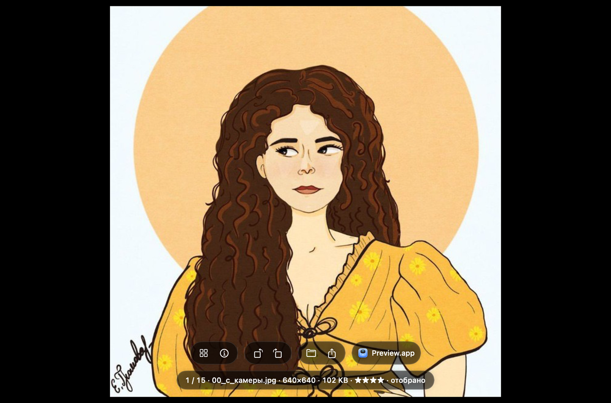
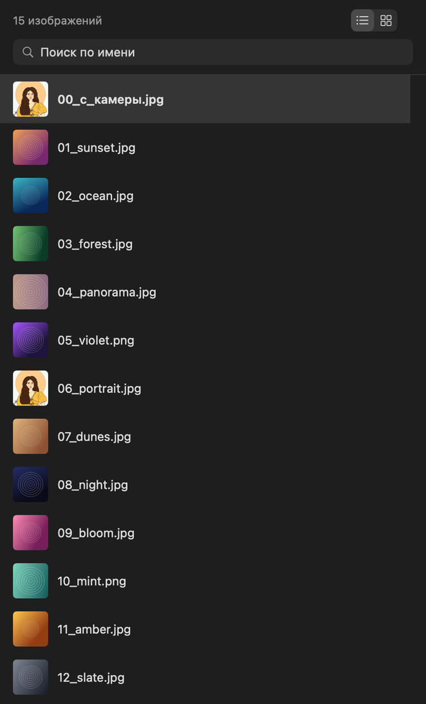
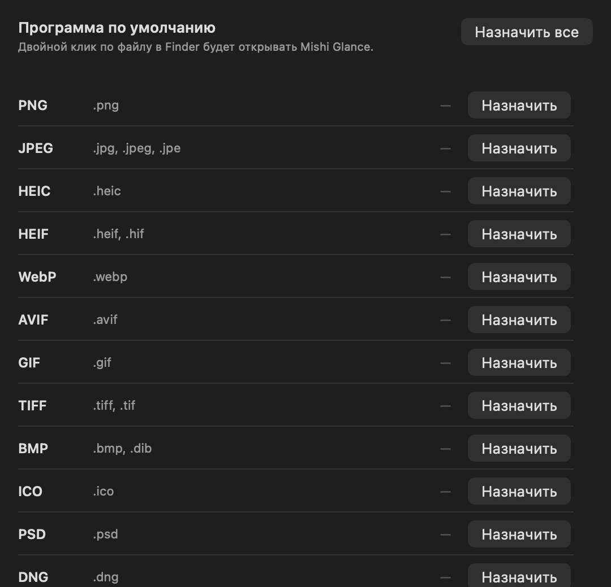
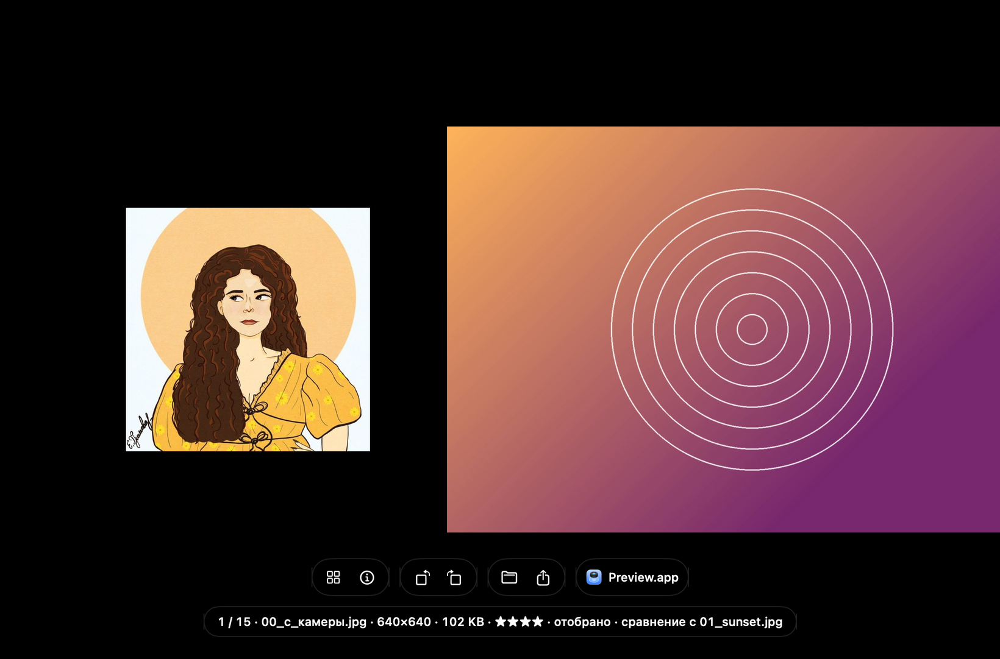
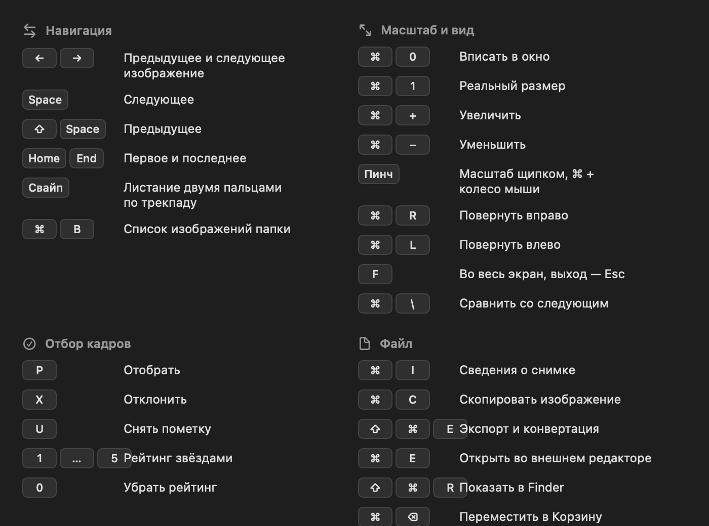

Листание чем угодно
Стрелки, пробел, свайп двумя пальцами по трекпаду. Как вам привычнее.
Открыли одно изображение — листайте остальные стрелками. Без возвращения в Finder, без лишних окон, без ожидания.

Зачем это нужно
В macOS двойной клик по фотографии открывает её — и на этом всё. Чтобы увидеть следующую, нужно закрыть окно и вернуться в папку.
Открыли фото. Посмотрели. Закрыли. Вернулись в папку. Открыли следующее. И так сто раз подряд.
Открыли фото и нажимаете стрелку. Вся папка пролистывается одним пальцем — так же быстро, как вы успеваете смотреть.
Вся папка перед глазами
Нужно вернуться к снимку, который был десять кадров назад? Откройте список — все изображения папки видны сразу. Списком с именами или крупной сеткой, как удобнее.

Один раз настроить
Отметьте форматы, которые хотите открывать в Mishi Glance — или все сразу одной кнопкой. После этого двойной клик по любому фото в Finder будет открывать именно его.

Возможности
Стрелки, пробел, свайп двумя пальцами по трекпаду. Как вам привычнее.
Приближайте щипком, разглядывайте детали, поворачивайте кадр. Файл при этом не меняется.
Одна клавиша — и ничего, кроме фотографии. Курсор пропадает сам.
По имени, дате или размеру — тот же порядок, что вы видите в папке.
Размер, вес, камера, объектив, выдержка и дата съёмки — в одной панели.
Пометьте удачные и отклонённые, поставьте рейтинг — и разложите папку одним действием.
Два снимка рядом с общим масштабом — чтобы выбрать, где резче.
Пересохраните снимок или всю папку в формат, который открывается везде.
GIF и APNG проигрываются целиком, а Live Photo с айфона оживает по клику.
DNG, Canon, Nikon, Sony, Fujifilm, Olympus, Panasonic — открываются наравне с JPEG.
Начните печатать — список папки отфильтруется на лету.
Если камера записала координаты, панель покажет, где сделан снимок.
Новая версия приходит сама. Ничего скачивать и переустанавливать не нужно.
Выбрать лучший
Сняли серию и не поймёте, какой удачнее? Поставьте снимки рядом — они масштабируются и двигаются вместе, поэтому разницу видно сразу. А клавишами можно тут же отобрать нужные и отклонить лишние.

Ничего не надо запоминать
При первом запуске программа коротко объясняет главное. А полный список клавиш открывается в любой момент — нажмите вопросительный знак.

Вопросы и ответы
Установите Mishi Glance и откройте любое изображение. Дальше стрелки «влево» и «вправо» перелистывают все фотографии папки, не возвращаясь в Finder. Работают также пробел и свайп двумя пальцами по трекпаду.
Встроенный «Просмотр» открывает по одному файлу за раз. Mishi Glance читает всю папку целиком и листает её с клавиатуры, оставаясь при этом лёгким — приложение занимает 3 МБ.
В настройках есть вкладка «Типы файлов»: отметьте нужные форматы кнопкой «Назначить» или все сразу кнопкой «Назначить все». После этого двойной клик по фото в Finder будет открывать Mishi Glance.
JPEG, PNG, HEIC, HEIF, WebP, AVIF, GIF, TIFF, BMP, ICO, PSD, а также RAW с фотокамер — DNG, Canon CR2 и CR3, Nikon NEF, Sony ARW, Fujifilm RAF, Olympus ORF, Panasonic RW2. Всего macOS декодирует 30 RAW-форматов.
Нет, Mishi Glance бесплатна. Исходный код открыт под лицензией MIT.
Да. Приложение собрано как universal binary и работает нативно и на Apple Silicon, и на Intel. Требуется macOS 15 Sequoia или новее.
Скачайте, перетащите в «Программы» и откройте любую фотографию. Дальше всё понятно без инструкции.